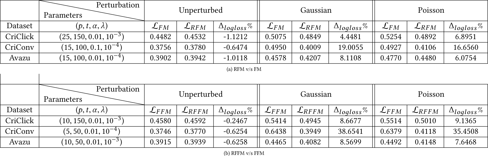

1 Introduction
User response prediction is a central problem in the computational advertising domain. The primary stakeholders in this ecosystem are: publishers who possess ad inventory, advertisers who bid for these ad slots and users who are exposed to the ad experience. Publishers and advertisers leverage signals like online user footprint, demographics and associated context for modeling user intent. Clicks and conversions being the key objectives, response prediction problem is generally formulated as estimating the probability of click or conversion given an ad impression. This probability subsequently translates to user-level bids or manifests itself in creating discrete user segments according to the propensity of user intent. This area has garnered interest from both the industry and academia, with logistic regression (LR) [4, 10] being the conventional choice. The recently proposed factorization machines (FMs) [22] and field-aware factorization machines (FFMs) [13] which model feature interactions in latent space have outperformed LR on several experimental and production datasets [1, 12].
User interaction signals, which serve as primary input to the predictive modeling, are procured from a wide variety of online sources like social media, search engines, e-commerce platforms, and news portals. A user's activity might be spread across multiple devices like desktop, mobile, and tablet. Interestingly, users exhibit a manifold of browsing patterns and device specific avatars: a user seeming to be a keen shopper on desktop might just be a casual browser on mobile. Without cross device linkages in place, the user interaction dataset comprises of multiple incomplete views for the same user. For US, Criteo [6] estimates that a whopping 31% of online transactions involve two or more devices and that both the conversion rates and buyer-journeys increase by about 40% in user-centric view of activity across multiple devices as compared to a partial device-specific view.
Even for the same device, factors like operating system, network connectivity and browser type have their own associated data leakages. These heterogeneities in the underlying generative mechanism lead to noise in the collected data. However, this problem has been heavily overlooked with only 5% marketers having seamlessly integrated customer touchpoints [8]. With around 65% cookies being deleted monthly [5], cookie churn acts as an additional contributor to noise and makes the user-advertiser association short lived. See Figure 1.
These cumulative inefficiencies during data collection end up camouflaging the user's holistic identity and raise a compelling question on the quality of the same data hose that had generated these signals in the first place. Some recent works have attempted to probabilistically stitch the user identity [14, 23], but a complete consolidation of user profiles remains an open problem.
Objective functions in the existing response prediction literature assume user profiles to be precisely known and remain agnostic to the inherent noise present in the input signals [25]. Consequently, the learnt classifiers possess a fuzzy understanding of the underlying causal relationships and thus exhibit remarkable sensitivity towards small data perturbations. Since model predictions guide bid price determination, a monetary loss or an opportunity cost is incurred for every misclassification [15].
This work aims at characterizing the environment-induced uncertainty in the user signals and reformulating the FM and FFM objective functions to be immune against data fluctuations. For this we utilize the robust optimization (RO) framework [2] which assumes a deterministic, set based uncertainty model and seeks solutions that are computationally tractable and remain near-optimal in the worst case realization of uncertainty. To the best of our knowledge, this is the first work advocating the application of RO in the user modeling domain. The main contributions of this paper are summarized below:
- We employ robust optimization principles to model the noise arising in online advertising signals as bounded box-type interval uncertainty sets.
- We propose two novel algorithms: robust factorization machine (RFM) and robust field-aware factorization machine (RFFM), as robust minimax formulations for FM and FFM respectively.
- We provide a distributed and scalable Spark based implementation for solving the optimization problem using parallel stochastic gradient decent.
- We present a comprehensive evaluation of our formulations on three publicly available response prediction datasets from Criteo and Avazu. The price of robustness is a classifier which takes a slight performance hit in the standard setting (-0.24$\%$ to -1.1$\%$ ) but significantly outperforms the non-robust counterparts (4.45$\%$ to 38.65$\%$ ) when subjected to noise.
- We systematically assess the tradeoff between robustness under noise and optimality of performance in standard setting and provide guidelines for selection of uncertainty sets.
- We extensively study model calibration and the effects of hyperparameters, initialization strategies, and parallelism on model performance and convergence.
- The final formulations obtained are generic and can aid in any noise sensitive classification domain. To demonstrate this broad applicability, we present results on a credit card fraud detection dataset.
2 Preliminaries
2.1 Response Prediction
We begin with an overview of the state-of-the-art approaches for predicting user propensity to click or convert given ad exposure. This is a supervised learning setting wherein the learner is presented with a set of m training instances $\lbrace (\mathbf {x}^{({i})}, y^{({i})}) | \mathbf {x}^{({i})}\in \ \mathbb {R}^{d}, y^{({i})} \in \lbrace 1,-1 \rbrace \text{ } \forall i \in \lbrace 1,\ldots ,m\rbrace \rbrace$ , where x (i) represents activity and context signals for user i and y (i) is the binary response variable which captures whether or not the user subsequently clicked or converted.
Logistic regression has long been the preferred classifier for user response modeling [4, 10] since it offers the advantage of well calibrated probability outputs, is highly scalable and also yields interpretable models. It learns weight vector $\mathbf {w} \in \mathbb {R}^{d}$ by maximizing log likelihood against a regularization penalty. The corresponding loss minimization equivalent takes the following form:
(1)
Linear models suffer with the limitation of not being able to model the effect of feature interactions on the dependent variable. Factorization machines (FMs) proposed in [22] have recently gained popularity as an effective learning paradigm for capturing impact of feature conjunctions especially for sparse datasets. They aim at learning a projection v j for every feature j in a latent factor space $\mathbb {R}^{p}$ . The strength of feature interactions is quantified by the inner product of the corresponding factors. The optimization problem remains similar to (1), with ϕ evolving to ϕFM to incorporate these interaction terms:
(2)
where $\langle . \rangle$ represents inner product and $\mathbf{V} \in \mathbb{R}^{d \times p}$ is a factor matrix composed of the latent vectors $\mathbf{v}_{j} $. Response prediction datasets largely comprise of categorical features a.k.a. fields. Typical examples of fields are publisher, device, brand, etc. which may take values from sets $\{ \text{CNN, Vogue}\}$, $\{\text{desktop, mobile, tablet}\}$, and $\{\text{Nike, Adidas}\}$ respectively. LR and FM use the expanded feature space generated by one-hot encoding of these categorical variables and the semantics of the `field' itself are lost.
Field-aware factorization machines (FFMs) are a model class that leverage the field information associated with every feature and extend the concept of FM to learn a dedicated latent vector corresponding to every (feature, field) combination [12]. So instead of learning a latent vector per feature, i.e. vVogue, vNike, etc. the model learns separate latent vectors for capturing fieldwise interactions like v(Vogue, device), v(Vogue, brand), etc. The function ϕ thus further evolves to:
(3)
where $ \mathbf{v}_{j, f_{k}} \in \mathbb{R}^{p }$ is a latent vector capturing interactions between feature $j$ and field of feature $k$ and $\mathbf{V} \in \mathbb{R}^{d \times q \times p}$ is a tensor composed of all these $ \mathbf{v}_{j, f_{k}}$ vectors. Here $q$ denotes the number of fields in the dataset.
FMs and FFMs have demonstrated superior generalization ability against other classifiers by winning two Kaggle competitions1 ,2 in the past. Other techniques like model ensembles [9, 27] and deep learning [3, 21] have also been explored for the user response prediction task. For this work, we restrict our focus on formulating robust counterparts for FM and FFM models.
2.2 Robust Optimization
Traditional stochastic optimization provides probabilistic characterization of noise in measurements. In contrast, paradigm of Robust Optimization (RO) [2] models uncertainty as bounded set based variability in the input observations. The uncertainty set is defined as U = {μ (i)|x (i) − η (i) ≤ x (i) + μ (i) ≤ x (i) + η (i), ∀i ∈ {1, …, m}}. Here $\text{$\eta $}^{(i)} \in \mathbb {R}_{\ge 0}^{d}$ represents the uncertainty bound for input x (i). Incorporating this notion of deterministic uncertainty allows for multiple manifestations of the input data points anywhere within the specified bounds. RO seeks to learn a function that remains feasible and near optimal for all possible realizations of uncertainty. For classification setting, this translates to minimizing the worst case loss suffered against all possible data perturbations. Assuming a general loss function $\mathcal {L}(\mathbf {w}, \mathbf {X})$ , the robust counterpart takes the following minimax form:
(4)
Computational tractability of robust formulations is governed by the choice of uncertainty sets. Box-type, ellipsoidal, conic, and polyhedral are commonly employed classes of uncertainty sets in the RO literature [11]. In this work, we design robust formulations assuming box-type (or interval) uncertainty under which, for each observation $\mathbf {x} \in \mathbb {R}^{d}$ , there is a corresponding uncertainty vector $\text{$\mu $} \in \mathbb {R}^{d}$ such that each dimension of the vector is bounded independently, i.e. |μj | ≤ ηj , ∀j ∈ {1, …, d}. The choice of interval uncertainty facilitates noise independence amongst individual features. Geometrically, this can be visualized as data points residing in a bounded hyperrectangular manifold.
Figure 2 illustrates how the training instances appear to a learner in a standard setting and after introducing box-type uncertainty. Note the shift in decision boundary of the learnt classifier. The RO framework presents a systematic tradeoff between choosing optimal classifier weights for given observations and robustifying against perturbations. Robust formulations for LR and support vector machines (SVMs) have been proposed in [7, 16]. Our work is the first attempt to systematically introduce robustness in the factorization machines.
3 Proposed Approach
FM and its extensions have witnessed a rapid adoption recently, not just within the purview of Kaggle competitions but also for the real-world bidding systems [12]. To incorporate noise-proofness against data perturbations in these models, we design robust counterparts for FM and FFM using RO principles under interval uncertainty. The resulting minimax formulation is then reduced to a pure minimization problem by obtaining upper bounds on terms involving uncertainty. We propose a stochastic gradient descent based parallelized training algorithm which can be deployed on a distributed environment like Spark for learning the final weight matrices.
3.1 Robust FM
Factorization machines consider both linear and pairwise feature interactions. This presents us with a choice of either sharing the same uncertainty vectors across the two types of interactions or decoupling the uncertainty parameters. We go with the second alternative and for each data point x, we associate uncertainty vector $\text{$\mu $} \in \mathbb {R}^{d}$ s.t. |μj | ≤ ηj , ∀j ∈ {1, …, d} for characterizing noise in linear interactions and matrix $\mathbf {\Sigma } \in \mathbb {R}^{d \times d}$ s.t. Σ j, k = σjσk , |σj | ≤ ρj , ∀j ∈ {1, …, d} for capturing noise induced by pairwise interaction terms. This choice is motivated by two reasons. The presence of Σ offers another degree of freedom while tuning the model. Also, order-2 interactions are being learnt in a latent space, which might not have similar semantics as the original feature space. This definition of μ and Σ confines the hyperparameter space to be linear in the number of features for a given training example. We now introduce these uncertainty terms and formulate ϕ for robust factorization machines (RFMs) as ϕRFM . For mathematical convenience, we add self-interaction terms to the robust variant.
With the redefined ϕ for RFM, the loss minimization view under uncertainties results in the following minimax formulation:
(5)
The inner maximization signifies the worst case loss incurred because of the uncertainty parameters μ (j) and Σ (j), ∀ 1 ≤ j ≤ m. Due to monotonicity of the terms in summation, maximizing the objective function in (5) reduces to maximizing ΩRFM . We hereby refer to the optimal solution of the reduced subproblem as $\Omega _{RFM}^{wc}$ .
(6)
Further, we derive the value of $\Omega _{RFM}^{wc}$ by obtaining upper bounds on the terms with uncertainties. Since the linear and pairwise uncertainty parameters have been considered independent, we can examine the relevant terms in isolation. We first group and analyze the terms associated with pairwise uncertainty σ.
(7)
(8)
Using the upper bounds obtained from (7) and (8) on uncertainty terms, we derive the value for $\Omega _{RFM}^{wc}$ as:
For notational convenience, we hereby refer to $\Omega _{RFM}^{wc}(\mathbf {x},y,\mathbf {w},\mathbf {V})$ as $\Omega _{RFM}^{wc}(\mathbf {x},y)$ . Using the derived value for $\Omega _{RFM}^{wc}$ the optimization problem in (5) simplifies to:
(9)
| Notation | Description |
|---|---|
| x (i) (or x) | Feature vector $\in \mathbb {R}^d$ for sample i |
| y (i) (or y) | Label ∈ { − 1, 1} for sample i |
| xj | Feature value $\in \mathbb {R}$ for jth dimension in a sample |
| t | Number of epochs |
| m | Number of training samples |
| q | Number of fields in the feature data |
| d | Dimensionality of original feature space |
| p | Dimensionality of latent factors learnt per feature |
| α | Learning rate for stochastic gradient descent |
| λ | Regularization parameter |
| w | Weight vector $\in \mathbb {R}^{d}$ for linear interactions |
| V | Factor matrix $\in \mathbb {R}^{d \times p}$ for FM |
| and tensor $\in \mathbb {R}^{d \times q \times p}$ for FFM | |
| μ (i) (or μ) | Linear uncertainty vector $\in \mathbb {R}^{d}$ for a sample |
| Σ (i) (or Σ) | Pairwise uncertainty matrix $\in \mathbb {R}^{d \times d}$ for a sample |
| η (i) (or η) | Linear uncertainty bound $\in \mathbb {R}_{\ge 0}^{d}$ for a sample |
| ρ (i) (or ρ) | Simplified pairwise uncertainty bound $\in \mathbb {R}_{\ge 0}^{d}$ |
| for a sample |
Note that by minimizing the worst case loss, we are encoding pessimism in the classifier, the magnitude of which varies with the size of hyperrectangles in which the data is bounded. Table 1 summarizes the notations used in this paper.
3.2 Parameter Learning: Robust FM
We use minibatch stochastic gradient descent (SGD) to solve the optimization problem (9) for robust FM. The corresponding loss gradient is given by:
(10)

3.3 Robust FFM
We now derive the robust counterpart for field-aware factorization machine (FFM), the more rigorous and expressive variant of FMs. Incorporating linear and pairwise uncertainty parameters in the original function ϕFFM in equation (3) yields ϕRFFM .
3.4 Parameter Learning: Robust FFM
We employ stochastic gradient descent (SGD) for parameter estimation. The gradient of loss function is given by:
(11)
4 Experiments
In this section we investigate the effectiveness of RFM and RFFM against their non-robust counterparts. In particular, we (i) evaluate the prediction quality of robust classifiers on original and perturbed datasets, (ii) examine the noise resilience arising from the choice of uncertainty sets, (iii) empirically compare different initialization strategies for the weight matrix, (iv) assess the impact of hyperparameters on model performance, (v) explore isotonic regression for calibration of classifiers, and (vi) study model convergence rate with increased parallelism. Our experimental findings reveal that by incorporating the notion of robustness, the resulting classifiers take a slight performance hit for the unperturbed datasets, but outperform the original formulations significantly when presented with noisy measurements.
4.1 Experimental Setup
4.1.1 Dataset Description. We evaluate our formulations on three publicly available real-world datasets. These encompass both clickthrough rate (CTR) and conversion rate (CVR) prediction settings, which are two central problems for large scale user response prediction.
- Criteo CTR Prediction Released for a Kaggle competition in 2014, this dataset has become an important benchmark for CTR estimation. The training data comprises of 45 million ad impressions served to users along with their online footprint in the form of 13 integer features and 26 hashed categorical features. Label indicates whether a user subsequently clicked on the ad or not. One-hot encoding of the categorical variables results in a feature space of size ∼ 106.
- Avazu CTR Prediction This dataset was released as part of a Kaggle challenge by Avazu advertising platform. It contains ten days of clickthrough data on mobile devices. The feature set comprises of signals like hour of the day, banner position, site id, device model, etc.
- Criteo Conversion Logs This dataset consists of conversion feedback signals for a portion of Criteo's ad traffic. In each row of the dataset, features represent an ad served to a user and a conversion timestamp label indicates when the user converted. If there is no purchase by the user, the field is empty. It is used widely for standardization of CVR algorithms.
The dataset statistics are summarized in Table 2. For brevity, we sometimes refer to Criteo click and conversion datasets as CriClick and CriConv respectively. In addition to the performance evaluation on these computational advertising datasets, we include a case study on a credit card fraud detection dataset in Section 5 to highlight that RFM and RFFM can characterize noise across domains.
| Dataset | $\#$ Instances | $\#$ Features | $\#$ Fields |
|---|---|---|---|
| Criteo CTR Prediction | 45,840,617 | 106 | 39 |
| Avazu CTR Prediction | 40,428,967 | 106 | 33 |
| Criteo Conversion Logs | 15,898,883 | 104 | 17 |
4.1.2 Evaluation Metric. For maximizing the efficiency of an ad campaign, the class probabilities estimated by a classifier need to be well calibrated since they directly impact the subsequent bidding for auctions. Hence we use logloss as the benchmarking metric for assessing model quality. Logloss (also known as logistic loss or cross entropy loss) is defined for the binary classification setting as:
4.2 Implementation Details
We have implemented RFM and RFFM on Apache Spark [26], a distributed computing framework facilitating efficient parallelization, which is crucial for timely processing of the current massive datasets. Spark provides fault tolerant data storage abstraction: RDD (Resilient Distributed Dataset), which is an immutable collection of data partitioned across cluster nodes. The data is stored in-memory, which is highly favorable for iterative workloads.
We employ iterative parameter mixing strategy for performing distributed stochastic gradient descent (SGD) [17, 28]. Figure 3 outlines the implementation workflow. (1) Input data is partitioned across executors. (2) An initial weight matrix is broadcasted to all data partitions. Each node performs a single update of minibatch SGD on the subset of data it contains. (3) After every epoch, models learnt independently by the nodes are averaged. (4) The resulting global model is broadcasted again. (5) The algorithm terminates when error between successive iterations falls below a threshold. This distributed training strategy demonstrates fast convergence owing to the synchronous nature of model updates.
Memory requirement of our formulations is proportional to the number of features in a dataset. Distributed SGD adds an additional latency in terms of model transmission cost over the network after each epoch. Model compactness is therefore imperative for driving efficient performance. Owing to high dimensionality of the feature space, we resort to the hashing trick [4], which uses a simple hash function to restrict the number of feature values.
In our experimentation, we use 80$\%$ of the data for training and 10% each for constructing validation and test sets. Also, since our goal is to examine the difference between the robust and non-robust variants, we refrain ourselves from delving into feature engineering and focus exclusively on the model specific aspects. The code and dataset links for our implementation are available on Dropbox3 for experimental reproducibility.
4.3 Choice of Uncertainty Sets
Having made the design choice of considering box-type uncertainty around data points in order to facilitate independence amongst covariates, the next critical step is to associate uncertainty bounds (η, ρ) with each training example. A straightforward approach is absolute assignment i.e. keeping these variables as additional parameters whose optimal values can be determined by parameter tuning. However, this is an expensive solution which would explode the hyperparameter space and render the possibility of obtaining the best performing model infeasible under practical settings. Another approach which seems appealing at first is to have field specific uncertainty values so that the number of newly introduced parameters is bounded. This approach however has the following drawbacks: it is tightly coupled with the dataset at hand and no direct link can be established between parameters selected and noise-proofness of the model procured after training.
These concerns encourage us to adopt the strategy of relative assignment for our experimentation. In this approach we select two positive real valued parameters ($\eta _{\%}$ , $\rho _{\%}$ ) such that for every measurement γ, the effective linear and pairwise uncertainty bounds are given by ($\eta _{\%}*\gamma$ , $\rho _{\%}*\gamma$ ). This simple trick significantly brings down the size of parameters to tune and at the same time retains the feasibility of assigning variable sized hyperrectangles around the data. Under this formulation, larger measurements are associated with higher variability or lower confidence. Additionally, we threshold the uncertainty bounds to moderate the incorporated noise. As we shall present in the results below, this methodology of designing uncertainty sets has a nice interpretability in terms of cost incurred by incorporating robustness v/s resistance gained under noisy settings.
4.4 Performance Comparison
We compare the performance of RFM and RFFM models against the original factorization machine formulations on the conversion and click datasets. We particularly focus on the relative behavior under noisy settings. Gaussian distribution is a popular noise model in signal processing [24]. On similar lines, we simulate noise in original datasets by adding a Gaussian perturbation $\mathcal {N} \sim (\mu _{noise}, \sigma _{noise})$ to the test data. We vary the noise parameters and examine the goodness of classifiers for both original and perturbed versions of datasets. The results are presented in Table 3. By adhering to worst case loss minimization, the robust classifiers take a conservative view even for the original datasets, resulting in a higher logloss as compared to the non-robust equivalents. However, when subjected to noise, the average performance degradation of robust classifiers is remarkably lower than the FMs and FFMs. In the risk sensitive domain of user modeling where signals captured might not be representative of complete user intent, this graceful degradation is a desirable property.
|  |
The levers offered by robust formulations for regulating uncertainty bounds are $(\eta _{\%} , \rho _{\%})$ . Higher values imply higher uncertainty accounted for by the trained classifiers and hence greater immunity against noise. We train multiple RFM and RFFM models by varying $(\eta _{\%} , \rho _{\%})$ and study the relative reduction in logloss against the non-robust variants for different noise configurations. This relative reduction is given by $\Delta _{logloss}\%=$ $\frac{(\mathcal {L}_{Original} - \mathcal {L}_{Robust})}{\mathcal {L}_{Original}}*$ 100 , where $\mathcal {L}_{{Original}{6pt}}$ and $\mathcal {L}_{{Robust}{5pt}}$ indicate loss under original and robust formulations respectively. As is evident from Figure 4, for each $(\eta _{\%} , \rho _{\%}$ ) the robust classifier starts off with a higher logloss w.r.t. baseline ($\Delta _{logloss}\%$ < 0) when the σnoise is low. However, on increasing the standard deviation of noise, the reduction in logloss is pronounced and goes as high as 40% for some cases. These findings not only reinforce the fact that the proposed classifiers indeed demonstrate superiority under noisy measurements, but also present an interesting tradeoff between aiming for high robustness and the price to be paid in the unperturbed settings.
In traditional signal processing systems, Poisson process is another widely used model for capturing noise. In an attempt to provide a comprehensive treatment to performance study under noise, we experiment with this noise model as well. Our findings are aligned with the insights procured for Gaussian noise model. We provide an interesting subset of results on the Avazu dataset in Figure 5.
These results reinforce the fact that the robust formulations are indeed able to withstand the potential incompleteness and corruption in response prediction datasets. Here we would like to reiterate the fact that our formulations are generic and can be applied to any domain where data uncertainty is a concern. The model designer can select $(\eta _{\%} , \rho _{\%})$ parameters in accordance with the degree of uncertainty, for the problem at hand.
4.5 Discussion
4.5.1 Initialization Strategy. Non-convexity of the optimization problem for factorization machines makes the selection of initial weight matrix pivotal to the optimality of results obtained. The traditional FMs employ Gaussian distribution for initializing model weights. Laplace distribution has recently been proposed [19] as a superior initializer owing to the fact that it has a higher peak than Gaussian and consequently results in a better fit for sparse datasets. For FFMs, sampling from Uniform distribution is another commonly adopted initialization approach [13]. We investigate the impact of different initialization strategies. The results summarized in Table 4 indicate that Laplace distribution outperforms Gaussian and Uniform distributions in terms of logloss for both RFM and RFFM across the three datasets.
| Dataset | Model | $\mathcal {L}_{Gaussian}$ | $\mathcal {L}_{Laplace}$ | $\mathcal {L}_{Uniform}$ |
|---|---|---|---|---|
| CriClick | RFM | 0.4538 | 0.4532 | 0.4541 |
| RFFM | 0.4619 | 0.4582 | 0.4598 | |
| CriConv | RFM | 0.3809 | 0.3780 | 0.3875 |
| RFFM | 0.3784 | 0.3769 | 0.3774 | |
| Avazu | RFM | 0.3944 | 0.3942 | 0.3952 |
| RFFM | 0.3952 | 0.3939 | 0.3941 |
4.5.2 Impact of Hyperparameters. Parameter tuning is an important step for deriving optimal performance from any learning algorithm. From Figure 6(a), we observe that model (RFM/RFFM) performance improves with number of epochs t, though there is a diminishing returns property evident in improvement, which seems intuitive. This trend is consistent for all the datasets.
Gradient descent approaches are sensitive to the selection of learning rate α. As can be observed from Figure 6(b), for the same number of epochs, choosing smaller step size results in higher logloss since not enough exploration has been performed in the loss function landscape. On the other hand, selecting very high values of α might result in skipping the minima altogether leading to an increased loss value.
Regularization parameter plays a key role in preventing model overfitting. RFMs and RFFMs exhibit less sensitivity to changes in the value of λ as illustrated in Figure 6(c). This observation suggests that robustness inherently imposes some degree of regularization.
Higher number of latent factors p results in models possessing better generalization ability. However, for the distributed implementation of gradient descent, a large value of p translates into increased weight matrix serialization overhead and network communication cost for model synchronization among nodes. The reduction in logloss with p and the corresponding increase in training time are depicted in Figure 6(d).
4.5.3 Model Calibration. Training models that give accurate probabilistic outputs is central to the user modeling problem since it plays a major role in subsequent bidding. Calibration plots a.k.a. reliability diagrams serve as useful visualization tools for assessing goodness of model predictions with respect to true posterior probabilities. For each bucket of model prediction, the mean true probability is the fraction of positive samples in the bucket. The output of a perfectly calibrated classifier can be represented as a diagonal line on the reliability curve. To calibrate the model outputs, we employ isotonic regression technique [18] of univariate curve fitting with monotonicity constraints, where model outputs serve as regressors and actual label is the dependent variable.
We calibrate the probability estimates generated by RFMs, RFFMs and their non-robust counterparts and investigate the relative improvement in logloss. After this postprocessing, we observe a higher marginal improvement in the calibration quality of robust classifiers. Figure 7(a) depicts the reliability curve for Avazu FFM and RFFM before and after applying isotonic regression. The percentage logloss reduction achieved as a result of calibration for the three datasets is presented in Figure 7(b).
4.5.4 Impact of Parallelism on Model Convergence. Degree of parallelism has an inverse relationship with model convergence rate. Increasing the number of RDD partitions results in gradient descent being applied on smaller subsets of data and hence the averaged global model, procured after each epoch, is less stable. The downside of keeping lesser partitions is that each parallel worker is delegated with large number of samples, which increases the time taken per iteration. Figure 8 demonstrates the classic tradeoff between training time speedup v/s classification quality.
5 Case Study: Fraud Detection
The proposed formulations RFM and RFFM add a significant value for user response prediction under perturbed settings, as established by the experiments in Section 4. However, these are generic predictors, not restricted to the computational advertising domain and can be employed in any noise-sensitive classification scenario. To substantiate this claim, we test our formulations in the field of credit card fraud detection [20]. The dataset comprises of 284,807 anonymized credit card transactions and the challenge is to label them as fraudulent or genuine. The feature set is composed of 28 PCA transformed numerical variables with 0.172% of transactions labeled as fraud. Absence of categorical features renders RFM (or FM) and RFFM (or FFM) formulations equivalent for this problem. The metric Δlogloss % (as defined in Section 4.4), which captures the logloss reduction achieved by the robust variants w.r.t. original FMs, exhibits dramatic improvement as the magnitude of Gaussian noise increases. This is evident from Figure 9, demonstrating superior noise resilience offered by RFMs. These findings are encouraging since they highlight domain independence of our formulations.
6 Conclusion and Future Work
The ever increasing customer touchpoints and the associated noise sources have created a pressing need to design algorithms which take into account input uncertainty for user modeling. To this end, we have proposed novel robust formulations for factorization machines and field-aware factorization machines. The distributed Spark based implementation for RFM and RFFM seamlessly scales to massive real-world datasets. Experimental evidence establishes a consistently superior noise resilience of the proposed formulations. This opens up new avenues for utilizing the combined power of robust optimization and traditional factorization machine models. As a future work, benchmarking the effectiveness of RFMs and RFFMs across a breadth of classification settings is a promising area of investigation. Exploring other choices of uncertainty models, like ellipsoidal and conic models is another interesting research direction. Applying RO principles to tree based ensembles and deep learning is yet another unexplored territory. The pursuit of the question of whether incorporating the notion of worst case loss minimization for these highly expressive models results in higher generalization power, might reveal deeper insights about the models themselves.